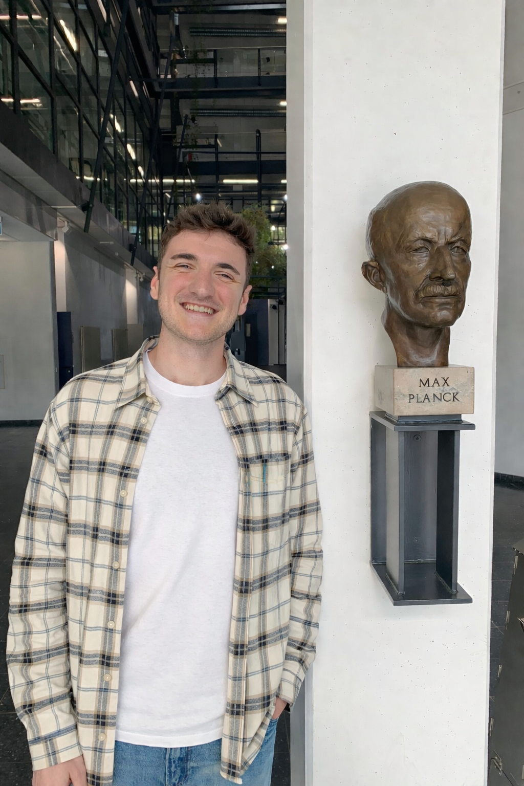
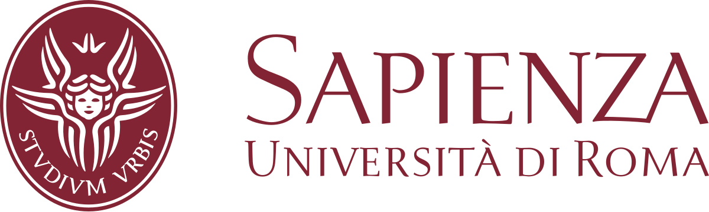

Max Planck Institute for Informatics
Visiting Researcher
Supervisor: Prof. Dr. Bernt Schiele
Working with Jonas Fischer and Jan Eric Lenssen
Saarbrucken, Germany 🇩🇪

I am a PhD student in Artificial Intelligence at Sapienza University of Rome, supervised by Prof. Fabio Galasso and Prof. Emanuele Rodolà. I am also a visiting researcher at the Max Planck Institute for Informatics, supervised by Prof. Dr. Bernt Schiele.
My research focuses on controllable and interpretable generative models, with an emphasis on diffusion and flow models, activation steering, unlearning, and safety mechanisms for generative AI systems.
Before starting my PhD, I worked as a master thesis intern at CINECA. I completed an Erasmus period at Maastricht University. I hold a Master's degree in Data Science with the title of Honor Student and a Bachelor's degree in Statistics from Sapienza University of Rome, both awarded with 110/110 cum laude. I was also awarded the title of Outstanding Graduate for ranking in the top 1% of students at Sapienza University.
/ Google Scholar / GitHub / LinkedIn
Visiting Researcher
Supervisor: Prof. Dr. Bernt Schiele
Working with Jonas Fischer and Jan Eric Lenssen
Saarbrucken, Germany 🇩🇪

PhD Student in Artificial Intelligence
Supervisors: Prof. Fabio Galasso and Prof. Emanuele Rodolà
Rome, Italy 🇮🇹

Erasmus Student
International study period in the Data Science Master program
Maastricht, The Netherlands 🇳🇱
Simone Facchiano, Jan Eric Lenssen, Wolfgang Stammer, Bernt Schiele, Fabio Galasso, Jonas Fischer. Steering Fields: Adaptive Vector Fields for Safe Image Generation and Beyond. NeurIPS 2026. Soon on arXiv.
Simone Facchiano, Stefano Saravalle, Matteo Migliarini, Edoardo De Matteis, Alessio Sampieri, Andrea Pilzer, Emanuele Rodolà, Indro Spinelli, Luca Franco, Fabio Galasso. Video Unlearning via Low-Rank Refusal Vector. ICLR 2026.
Maria Rosaria Briglia*, Simone Facchiano*, Paolo Cursi*, Alessio Sampieri, Emanuele Rodolà, Guido D'Amely, Luca Franco, Fabio Galasso, Iacopo Masi. Not All Latent Spaces Are Flat: Hyperbolic Concept Control. Under submission.
Simone Facchiano, Giorgio Strano, Donato Crisostomi, Irene Tallini, Tommaso Mencattini, Fabio Galasso, Emanuele Rodolà. Activation Patching for Interpretable Steering in Music Generation. arXiv.